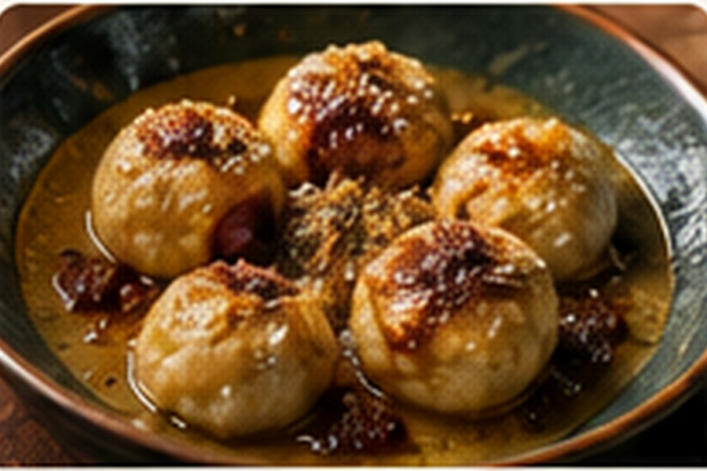

Grape Dumplings
Tender dumplings simmered in grape juice until the liquid thickens into a vivid, glossy purple sauce.

About this dish
Grape dumplings are a beloved Cherokee dessert. Contemporary versions often use wheat flour, butter and bottled Concord grape juice, while Cherokee culinary educator Nico Albert Williams explains that the dish has deeper roots in ancestral ingredients and techniques, including cornmeal and wild grape juice.
This Fringe Table version uses unsweetened Concord juice and a simple wheat-flour dough. It is therefore presented as a practical home adaptation rather than a reproduction of an ancestral preparation.
A dessert shaped by continuity and adaptation
At the Smithsonian Folklife Festival, Williams describes grape dumplings as a Cherokee gathering food served at church lunches, wild onion dinners and community meals. She also explains that the modern recipe evolved as Cherokee cooks adapted to ingredients available through periods of disruption and forced change.
That story matters because the wheat-flour version is not evidence that the dish lacks Indigenous roots. Instead, it shows a living food tradition adapting while maintaining its place at Cherokee gatherings. Williams has also described learning the dish through repeated tasting, testing and community memory.
This page follows a modern accessible style. Cherokee family recipes and older corn-based versions may differ significantly.
Preparation notes
Concord juice varies in sweetness. Starting unsweetened lets you control the finished sauce rather than ending with a syrupy dessert.
A hard boil can tear the dumplings and reduce the juice before the centers cook.
The flour from the dumplings naturally thickens the grape juice. Do not add a separate starch before seeing the final consistency.
Ingredients & detailed method
Ingredients
- 4 cups unsweetened Concord grape juice
- 1/3 cup sugar, or to taste
- 2 cups all-purpose flour
- 2 tsp baking powder
- 1/2 tsp salt
- 3 tbsp cold butter or neutral fat
- About 3/4 cup water
Method
- 1.Set the grape base. Pour the juice into a wide saucepan and bring it to a gentle simmer over medium heat.
- 2.Sweeten cautiously. Taste the hot juice and add sugar a little at a time. It should taste pleasantly sweet, not like candy, because it will concentrate as it cooks.
- 3.Make the dry mixture. Whisk flour, baking powder and salt in a bowl.
- 4.Work in the fat. Rub in cold butter with fingertips until the mixture resembles coarse crumbs. Checkpoint: no large butter pieces should remain.
- 5.Hydrate the dough. Add water gradually, mixing just until a soft dough comes together. Do not knead aggressively.
- 6.Rest. Let the dough stand 10 minutes. Checkpoint: it should be soft enough to roll without cracking but not sticky enough to coat your hands.
- 7.Roll and cut. Lightly flour the counter and roll the dough about 1/4 inch thick. Cut into small squares or short strips.
- 8.Add dumplings individually. Maintain a gentle simmer and drop pieces in one by one, separating them as they enter the juice.
- 9.Cook through. Simmer uncovered 10–15 minutes, stirring gently from the bottom once or twice. Checkpoint: the dumplings should puff slightly and have no raw flour line when one is cut open.
- 10.Check the sauce. The grape liquid should lightly coat a spoon and cling to the dumplings. If still watery, simmer 2–3 minutes longer; if too thick, loosen with a splash of grape juice or water.
- 11.Rest and serve. Turn off the heat and rest 5 minutes. Serve warm, with extra sauce spooned over each portion.